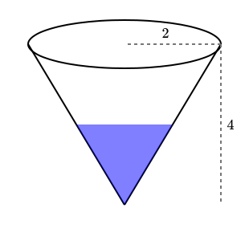
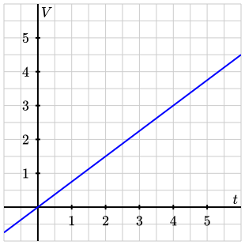

Activity 1.1.2.
1.1.2.a
Answer.
Sketches should look something like the following image.

An inverted cone with labeled radius \(2\) ft and depth \(4\) ft, with water partially filling the bottom of the tank.
1.1.2.b
Answer.
Changing: volume, height, surface area, and time. Not changing: rate of water entering, height of tank, and radius of tank.
1.1.2.c
Answer.
| \(t\) | \(V\) |
| \(0\) | \(0\) |
| \(1\) | \(0.75\) |
| \(2\) | \(1.5\) |
| \(3\) | \(2.25\) |
| \(4\) | \(3.0\) |
| \(5\) | \(3.75\) |

A graph of volume versus time, using the values from the table. The graph is a straight line through the origin with slope \(0.75\text{.}\)
1.1.2.d
Answer.
Sketches should show a curve starting at the origin that is bending downwards as it approaches the maximum depth of \(4\) ft.